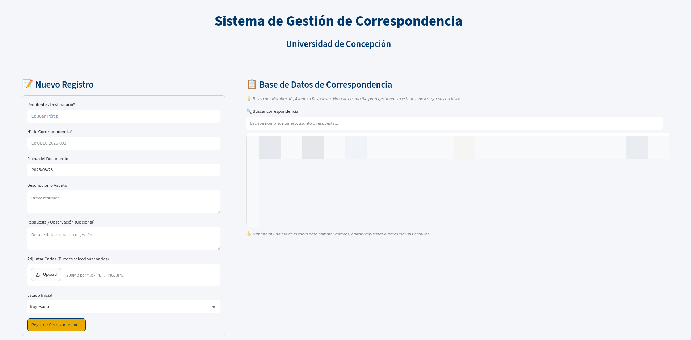

mzvic@mzvic:~$ streamlit run app.py
Managing incoming official correspondence across departments often becomes a hassle when relying on loose spreadsheets and scattered PDF scans. To streamline administrative tracking, I developed Correspondencia UdeC: a responsive, full-stack local web system built with Streamlit and Pandas for quick document ingestion, status workflow tracking, and file association.
The system operates as a two-column interactive portal: the left side handles fast record entry with automated multi-file attachment handling, while the right side hosts a real-time searchable database. Uploaded documents are automatically sanitized, timestamped, and bound to specific tracking IDs (e.g., UDEC-2026-001) inside a dedicated file repository.

Core System Architecture & Features:
Text Normalization:NFD Unicode decomposition to ensure search queries ignore accents/diacritics.Multi-File Management:Uploads PDFs/Images with automatic filename collision avoidance.State Machine Tracking:Tracks progress through 4 discrete states (Ingresada → En Revisión → Respondida → Archivada).Institutional Branding:Injected CSS matching UdeC blue (#00386B) and gold (#EAAA00) color schemes.
To ensure hassle-free search across historical entries, the application normalizes input strings via unicodedata. This allows users to filter incoming items by sender, tracking code, subject, or resolution notes without worrying about accents or case sensitivity.
Data persistence relies on a lightweight CSV-backed storage model that initializes seamlessly on launch, automatically maintaining schema compatibility whenever new fields (such as dynamic response notes) are introduced.